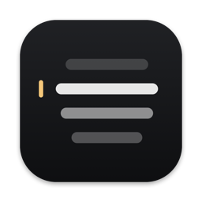
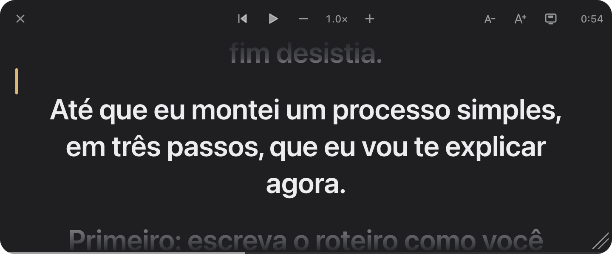
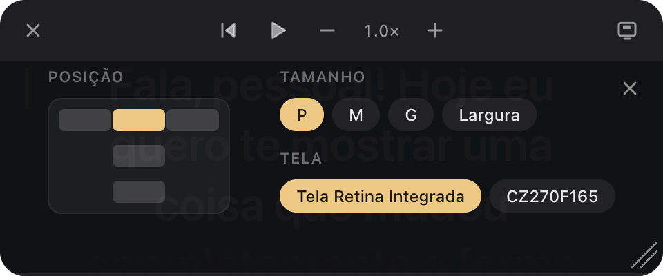

Teleprompter
Leia seu roteiro olhando para a câmera. No computador ele fica na sua tela, mas não aparece na gravação.

A linha de leitura fica no alto, perto da câmera. O que já foi lido vai sumindo.
Some da gravação
No Mac e no Windows a janela fica fora de capturas de tela. Você vê, o vídeo não.
Onde e do tamanho que quiser
Escolha a posição num mapinha da tela, troque entre pequeno, médio, grande ou largura total, ou arraste o canto.
No seu tempo
Diga quanto tempo o vídeo deve ter e ele ajusta a velocidade. Roteiros ficam salvos no seu aparelho, sem conta.

Clique no ícone de tela nos controles: posição, tamanho e em qual monitor ele aparece.

O editor: roteiros, duração, tamanho da letra e opacidade do fundo.
Como instalar
Mac
- Abra o .dmg e arraste o Teleprompter para Aplicativos.
- Abra o app. O Mac vai avisar que não pode verificar o desenvolvedor: feche o aviso.
- Em Ajustes do Sistema → Privacidade e Segurança, clique em Abrir Mesmo Assim.
- Para fixar: botão direito no ícone do Dock → Opções → Manter no Dock.
Windows
- Abra o Teleprompter-windows.exe.
- Se aparecer “O Windows protegeu o computador”, clique em Mais informações → Executar assim mesmo.
- Ele instala sozinho e cria um atalho no menu Iniciar.
Tablet e celular
- Toque em Tablet e celular lá em cima.
- No iPad/iPhone: Compartilhar → Adicionar à Tela de Início. No Android: menu ⋮ → Adicionar à tela inicial.
- Toque no texto para começar e pausar; arraste para ajustar.
A invisibilidade na gravação vale para o app de Mac e de Windows e funciona com a maioria dos gravadores, mas alguns podem ignorá-la: faça um teste antes de gravar algo importante. No tablet e no celular o texto aparece em gravações de tela; use o aparelho como teleprompter ao lado da câmera.
Atalhos
- Espaço
- Começar ou pausar (no tablet: toque no texto)
- ↑ ↓
- Mais rápido / mais devagar
- ⌘/Ctrl + −
- Letra maior / menor
- ⌘/Ctrl 1–4
- Tamanho: pequeno, médio, grande, largura total
- ⌘/Ctrl ← ↑ → ↓ 0
- Posição: topo esquerda, topo centro, topo direita, embaixo, centro
- R
- Voltar ao início
- Esc
- Fechar o teleprompter
- ⌘/Ctrl ↩
- Abrir o teleprompter a partir do editor